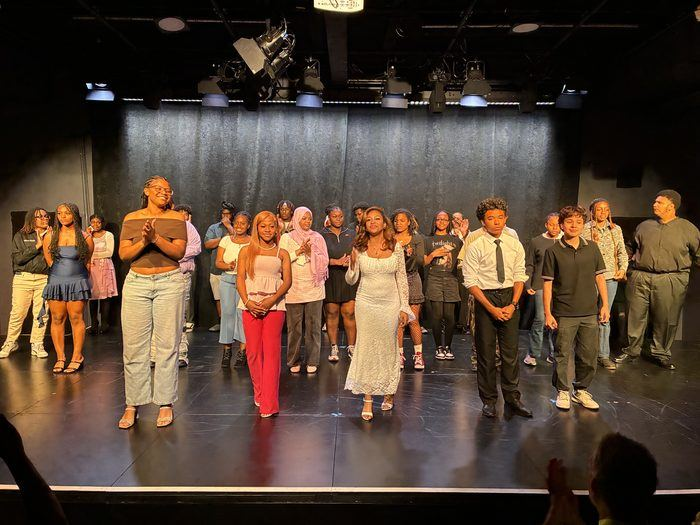

Covering HEARTH? Start here.
For journalists, podcasters, and media outlets.
A community-powered studio launches with a circular model connecting talent development, community building, content production, and professional services.
Quick facts
- FOUNDED
- 2025, NYC & NJ. Planning began in 2024.
- LEADERSHIP
- Alscott Worrell, Founder & CEO · Matthew Guthrie, COO
- FOCUS
- NYC & NJ · National
- AUDIENCE
- 13,000 YouTube subscribers
- PROOF OF CONCEPT
- Youth in Film (Oct 2025–Spring 2026): 10 student producers, public showcase at Hamilton Family Arts Center
- PRESS CONTACT
- Matthew Guthrie, COO · press@buildyourhearth.studio
Images · 300 DPI · Credit “Courtesy of HEARTH Studios”



About HEARTH Studios
HEARTH Studios is a community-powered talent development studio operating across NYC & NJ, with national reach. We connect four interconnected practices: talent development (education and mentorship), community building (gathering and mutual support), content production (films, music, digital projects), and professional services (music supervision, casting, content strategy).
We work specifically with underrepresented creators—emerging filmmakers, musicians, storytellers, and production professionals—helping them navigate creative industries while contributing their labor and vision to projects with real reach and revenue.
HEARTH Studios is a community-powered talent development studio founded in 2025 and headquartered in New York, with operations across New Jersey and national reach. The studio operates through four interconnected practices: talent development, community building, content production, and professional services. HEARTH works with underrepresented creators to build sustainable creative careers while producing culture with institutional reach and commercial viability. Learn more at buildyourhearth.studio.
Frequently asked
What makes HEARTH different from other talent development programs?
HEARTH integrates education, community, production, and revenue into a single circular system. Rather than treating talent development as a nonprofit arm separate from professional work, we embed emerging creators into real projects that generate actual income, cultural reach, and portfolio pieces. This means students aren’t practicing in a vacuum—they’re contributing to work that matters, while learning professional craft.
Who participates in HEARTH programs?
HEARTH works specifically with underrepresented creators: emerging filmmakers, musicians, storytellers, screenwriters, and production professionals who belong in creative industries but haven’t yet found institutional access. We prioritize people from communities historically excluded from media and entertainment infrastructure.
What is Youth in Film, and why did you highlight it?
Youth in Film (October 2025–Spring 2026) is our proof-of-concept initiative. Ten student producers from Mastery Charter Lenfest Campus participated in a rigorous, 44-minute daily curriculum covering all aspects of short film production—from pre-production to post-production. They produced a completed short film (Time Lock) with institutional partners and wrapped with a public showcase at The Hamilton Family Arts Center in Philadelphia. This program demonstrates how the circular model works in practice: students learned professional craft while creating real cultural output with exhibition and impact.
How is HEARTH structured as a business?
HEARTH Studios generates revenue through professional services (music supervision, casting, content strategy for institutions and brands), content production (licensing and exhibition), and educational programming (cohort-based tuition and workshops). This multi-revenue model allows us to invest earnings back into talent development and community programs rather than relying entirely on grants or donations.
What content is HEARTH producing?
HEARTH produces across several formats: live-music cinematic web series, documentary series exploring emerging creative talent, guest-interview podcasts, and single-project releases including short films and event-based docu-series. All content prioritizes emerging creators as both subjects and production crew.
Where can I learn more?
Visit buildyourhearth.studio or subscribe to The Glow, our weekly newsletter. For direct press inquiries, contact Matthew Guthrie at press@buildyourhearth.studio.
Coverage
Media mentions will be listed here as coverage grows.